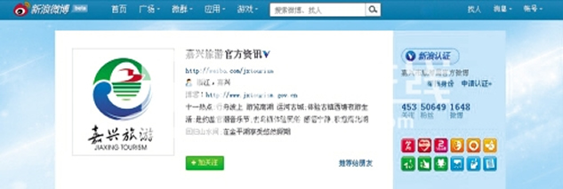

“嘉兴旅游官方资讯”微博为什么火了

悄无声息之间，微博已然走进人们的生活，它以短小精练的篇幅传递着各类信息，并出人意料地改变了信息传播的传统格局。社会各界纷纷将关注的目光投向这一新生事物，一时间，开通官方微博在各级政府部门中流行起来。作为国内较早开通旅游官方微博的嘉兴市旅游局，利用“嘉兴旅游官方资讯”这一微博平台，构筑起和游客、网友沟通交流的桥梁，树立起亲民、为民的新形象，取得了很好的成效。
N刘艳阳
开通5个月粉丝超5万
4天前，新浪“嘉兴旅游官方资讯”微博粉丝一栏显示，这个微博拥有粉丝将近4.77万人，就在昨天下午，这一数字已悄然跃升到50649——仅仅3天时间，关注“嘉兴旅游官方资讯”微博的新网友便增加了将近3000人。
明天，是“嘉兴旅游官方资讯”微博诞生5个月的日子。短短几个月内，发布、转发微博近1700条，粉丝超过5万人，最近平均每天新加关注者1000人，如此“成长”的速度，是“嘉兴旅游官方资讯”微博的兼职“小编”们所没有想到的。
“我们开始时也没有想到它会有这样大的影响力，只是希望紧跟着互联网发展的脚步，建设一个宣传嘉兴、介绍嘉兴旅游的新平台。于是，在5月19日，中国旅游日当天，‘嘉兴旅游官方资讯’新浪微博率先开通。随后，腾讯微博也正式开通。既然建起这样的平台，我们就认认真真把它做实，不做表面文章——当初谁也没预料到，5个月之后，我们的新浪微博竟然有了不小的影响力。”旅游推广中心负责人顾伟建告诉记者，嘉兴旅游官方微博的开通，使旅游部门跳出了常规政务网站的运作维护模式，以全新的形式组织内容，以全新的姿态面对公众，让各地旅游爱好者能够随时随地了解嘉兴旅游的即时信息、风土人情、旅游景点等众多信息，成为人们旅途中的一个好帮手、一个“小灵通”。
每天，从上午7点到晚上11点，“嘉兴旅游官方资讯”微博的编辑都会不时地更新微博，随时公布嘉兴景区的天气状况、旅游文化动态、旅游交通信息、景区（点）信息等。同时，编辑还会搜寻各种关于嘉兴地方文化的微博，转发到“嘉兴旅游官方资讯”上，其中，包括嘉兴美食、地方文史、嘉兴新闻等内容。为充分展示嘉兴国家历史名城和中国优秀旅游城市风采，编辑小冯等人利用休息日走访嘉兴的每个景区（点）、文化遗存点以及“非遗”传人等，为粉丝展示嘉兴深厚的历史文化积淀和丰富多彩的民俗文化，以吸引更多的游客来观光旅游和休闲度假。同时，微博也是嘉兴旅游资讯服务的一个新平台，只要看到有网友咨询相关事宜，编辑都会在最短的时间内予以答复，网友关于旅游方面的投诉，微博编辑也会及时转交旅游监管部门受理。微博的各种贴心服务，让广大网友未到嘉兴，便能够感受到嘉兴人的热情，让游客感受到温暖。
旅游官方微博形成强大磁场
今年是建党90周年，南湖旅游区迎来了上百万的游客，众多游客需要即时的动态信息，如南湖革命纪念馆新馆什么时候开放，南湖旅游节等活动在哪里举办，七一前后南湖旅游区停车场布局与分流引导方案，市区其他景点信息介绍等。为此，旅游官方微博编辑深入景区第一线调查摸底，并在第一时间发布，为游客排忧解难，深得粉丝的好评。同样，端午节民俗文化节是我市最近几年来成功举办的一大经济文化盛事，也是吸引长三角游客的一个良好契机。"嘉兴旅游官方资讯"微博的开通，让更多的游客对这一盛事有了了解。
顾伟建告诉记者，端午节前，微博迎来了第一个粉丝增长的高潮，“微博的独特功能，让‘嘉兴端午，中国味道’活动有了更高的知名度：网友在‘搜索’一栏输入‘端午节’，便看到了‘嘉兴旅游官方资讯’微博发布的即时信息，相关的活动一目了然。这期间，每天的新粉丝都超过3000人。微博对于嘉兴旅游业的贡献，可见一斑。”
“游客最需要什么信息，我们便主动提供这方面的内容——这就是我们微博的关注角度。比如盐官观潮节前后，由于出现了多年难得的大潮，旅游官方微博不仅做好大潮的宣传，更重要的是提醒游客注意观潮安全。海宁老盐仓出现8·31特大涌潮后，大量游客涌到老盐仓等地观潮，为确保安全，有关方面关闭了老盐仓长达4公里的沿江海堤，微博在第一时间发布了有关信息，避免游客不必要的往返。这在以往，是不可能做到及时提示的。网民就是我们的市场，粉丝就是我们的客户。开通了微博，我们就会好好利用它的特性，亲近游客，关注游客，服好游客，使微博成为嘉兴旅游宣传的新载体。”从亲民的话语到体贴的提醒，从精美的图片到周详的攻略，嘉兴旅游官方微博为此下了不少的工夫。
自从有了微博，嘉兴各县（市）、各景区举办的相关活动，便有了一个新的宣传平台。嘉兴旅游的信息，通过众多的微博粉丝迅速传播开来。动辄上百条的有效评论、转发，印证了嘉兴旅游官方微博在网络上日益强大的磁场。
嘉兴旅游官方微博“织”得起劲，也带动了全市的旅游部门、景区、旅行社等相关单位。据了解，目前，南湖景区、乌镇、湘家荡、梅花洲、西塘、碧云花园休闲农庄、南北湖、盐官景区等景区和平湖、桐乡、秀洲等县（市、区）旅游主管部门也开通了旅游官方微博。"乌镇旅游"作为嘉兴旅游景区第一个开通的微博，成为国内关注度最高的景区微博之一。嘉兴旅游微博形成了一个新的宣传网络，它们利用各自的粉丝资源，为嘉兴旅游创造了新的发展空间。作为一种全新的自媒体，嘉兴旅游部门还就如何建立一个完善微博发布管理平台、构建起“上下联动，左右互动，关注网民，服务游客”新型宣传载体进行了深入探索。
到明天，“嘉兴旅游官方资讯”微博开通整整5个月。为庆祝这一时刻，“嘉兴旅游官方资讯”微博将举办一次有奖互动活动：只要在10月19日至21日期间成为“嘉兴旅游官方资讯”的粉丝，并在微博留言的网友，都有机会获得纪念品。纪念品为印刷精美且实用的《畅游杭州都市圈——杭州、绍兴、嘉兴、湖州自驾游攻略》和《水乡·古镇·名园》书籍，喜欢旅游的读者，赶快牵手“嘉兴旅游官方资讯”吧！